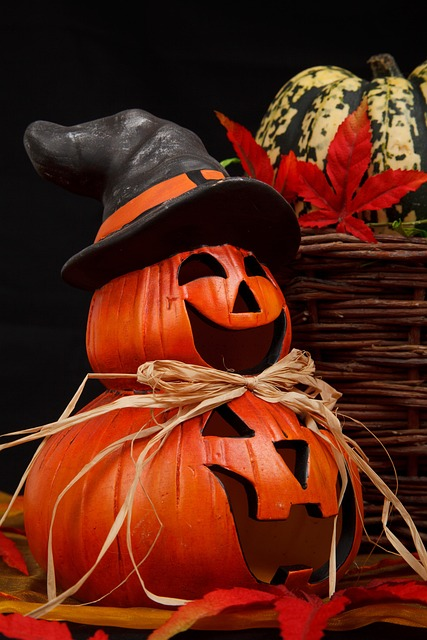
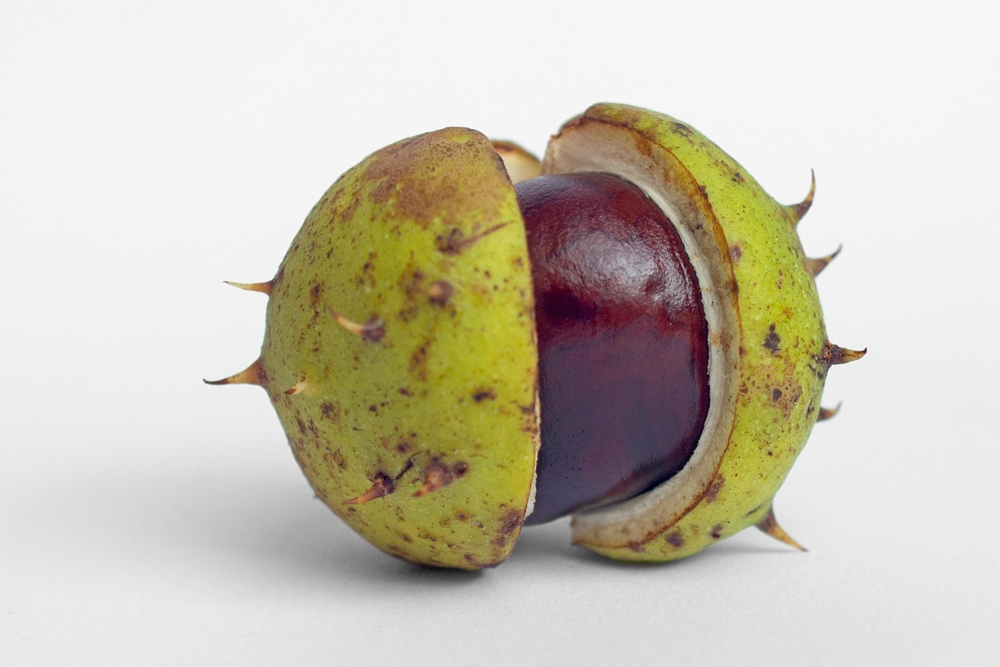
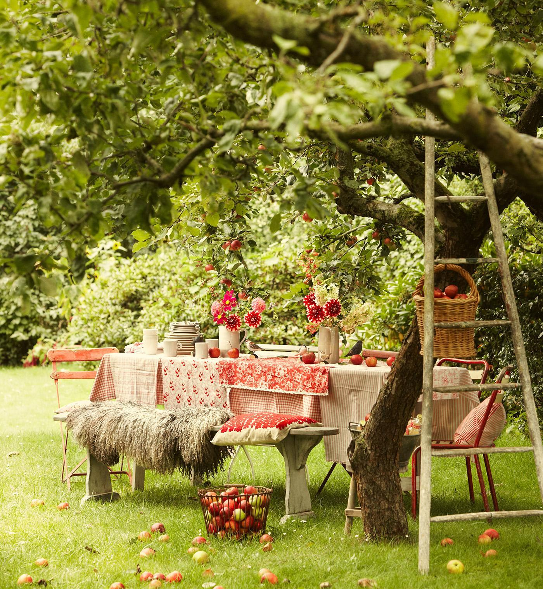

Haloween |
|
Halloween egy őszi ünnep, amelyet október 31-én tartanak. Eredetileg a kelta népek Samhain nevű ünnepéből származik, amikor a nyár végét és a sötétebb évszak kezdetét ünnepelték. Az emberek régen tüzeket gyújtottak, hogy elűzzék a rossz szellemeket. Ma már inkább vidám, jelmezes mulatságként ismert. A gyerekek különböző maskarákba öltöznek, és házról házra járnak édességet gyűjteni. Ezt angolul „trick or treat”-nek nevezik, ami azt jelenti: „csokit vagy csalunk”. A házakat töklámpásokkal és ijesztő díszekkel szokták feldíszíteni. Sok család ilyenkor sütőtökös süteményeket is készít. Az iskolákban és városokban gyakran rendeznek jelmezversenyeket és bulikat. Halloween így egyszerre félelmetes és vidám ünnep, ami sokak kedvence lett világszerte. |
Gesztenyegyűjtés |
|
A gesztenyegyűjtés az ősz egyik legkedvesebb hagyománya. Amikor lehullanak a levelek, az emberek gyakran elindulnak az erdőbe vagy a parkba, hogy gesztenyét szedjenek. A friss levegő és a színes lombok látványa igazi őszi hangulatot teremt. A gyerekek versenyeznek, ki találja a legnagyobb vagy legfényesebb gesztenyét. Sok család kosarakkal és hátizsákokkal indul útnak, hogy minél többet gyűjtsön. Otthon aztán közösen válogatják és tisztítják a termést. A gesztenyéből nemcsak finom ételek készülnek, hanem aranyos figurák is, fogpiszkálóval és színes papírral. Ez a közös kézműveskedés jó alkalom a beszélgetésre és a nevetésre. A gesztenyegyűjtés segít közelebb kerülni a természethez és egymáshoz is. Ezért sokan minden évben izgatottan várják, hogy újra elindulhassanak a gesztenyés erdőkbe. |
Őszi szüret |
|
Az őszi szüret az egyik legfontosabb és legvidámabb hagyomány a falvakban és a borvidékeken. Amikor a szőlőfürtök beérnek, eljön az idő, hogy leszedjék őket a tőkékről. A családok, barátok és szomszédok ilyenkor összegyűlnek, hogy együtt dolgozzanak a domboldalakon. A szőlőt kosarakba vagy puttonyokba gyűjtik, majd préselik, hogy must készüljön belőle. A friss must édes illata betölti az udvart, és mindenki megkóstolja. A nap végén közös ebéd vagy vacsora zárja a szüretet, sok nevetéssel és zenével. Sok helyen ilyenkor tartanak szüreti felvonulást is, népviseletbe öltözött emberekkel és feldíszített kocsikkal. A szüret nemcsak a munka, hanem az ünneplés ideje is. Összeköti az embereket, és hálát adnak a bőséges termésért. Így a szüret az ősz egyik legszebb, legösszetartóbb hagyománya maradt. |